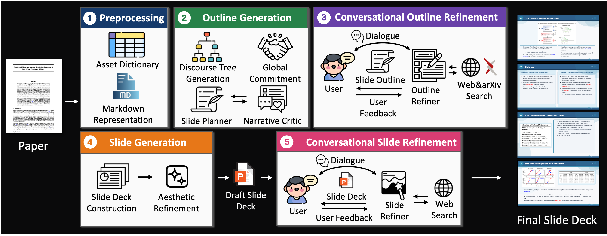
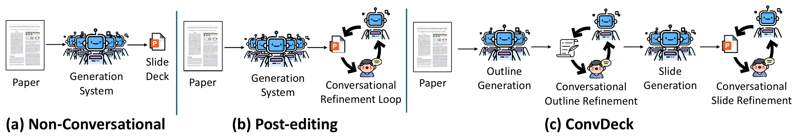
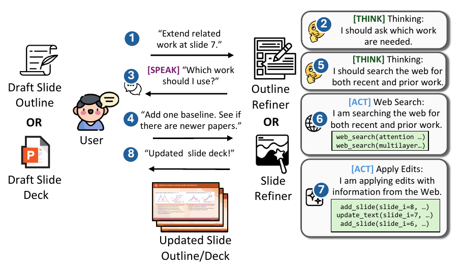

1 / 1
ConvDeck turns a research paper into a presentation you can shape through conversation: refining the narrative outline, then polishing the rendered deck. Feedback is routed to the stage where each decision is actually made.

This presentation was generated by ConvDeck from its own paper, then refined through the same conversational stages it describes.
A 16-slide deck generated by ConvDeck from its own paper. Use the arrows (or ← / → keys) to browse, and Expand for fullscreen.
Prior systems either generate a deck in a single pass, or bolt a single conversational loop onto the finished slides, forcing every request through a post-hoc editor. ConvDeck instead distributes interaction across the pipeline, aligning each refinement step with the component best suited to act on it.

The system reads the paper and emits the full deck in a single generation. If the output misses your intent, there is no way to steer it.
A single conversation runs on the finished slides. Narrative order, content coverage must be patched through surface-level edits, which is inefficient and unreliable.
Two loops: revise the narrative and structure on the outline before rendering, then refine figures, layout, and wording on the rendered deck.
ConvDeck's outline and slide generation follow a narrative-driven, multi-agent design (building on ArcDeck). What's new is that the two conversational stages — Stage 3 and Stage 5 — put the user in the loop exactly where each kind of decision is made.
Docling parses the paper into a markdown representation and an asset dictionary of figures and tables with their captions, while a citation-key dictionary preserves in-text citations for later stages.
A narrative-driven planner builds a draft outline: an RST discourse tree captures rhetorical relations, a Commitment Builder turns the target audience and duration into a global intent, and a Slide Planner ⇄ Narrative Critic cycle drafts and revises the outline.
Before any slide is rendered, you revise narrative flow, section emphasis, slide ordering, and content coverage. An Outline Refiner adds, edits, splits, merges, removes, and reorders slides — so structural changes propagate cheaply across the whole deck.
The refined outline becomes a draft deck: a Slide Deck Constructor selects figures and layouts and writes concise bullets, and an Aesthetic Refiner adds emphasis and fills sparse slides. Slides are compiled to editable PPTX via JavaScript and PPTXGenJS.
Now looking at the rendered slides, a Slide Refiner corrects what only the visual output reveals — text overflow, undersized figures, crowded layouts — through localized edits: insert, delete, modify, split, merge, reorder, reposition, resize, and typography.
Inspired by ReSpAct, ConvDeck's refiners don't blindly edit. They reason about your feedback and then either speak — asking a clarifying question or explaining a revision when a request is ambiguous — or act, applying localized edits through dedicated tools. Every edit is a local update, so the deck is never regenerated from scratch.

The agent reasons about the request and what information is missing before touching the outline or deck.
When feedback is underspecified or the goal is ambiguous, it asks a clarifying question and discusses revision options rather than guessing.
It applies edits through dedicated editing functions, and can search the web or arXiv to bring in related work or newer results on request.
On the 100-paper ArcBench benchmark, across GPT-5, Gemini 3 Pro, and Qwen3-VL backbones and two independent VLM judges, stage-specific conversational feedback raises user-goal satisfaction while preserving narrative coherence, content quality, and visual presentation.
| Conversational stage | Before | After | Δ |
|---|---|---|---|
| Outline refinement (Stage 3) | 37.7% | 92.0% | +54.3 |
| Slide refinement (Stage 5) | 68.4% | 86.4% | +18.0 |
Per-stage goal improvement. Each stage improves mainly the categories it is designed to address — outline-level changes are cheap and global before rendering, while figure, layout, and wording fixes depend on the rendered output only Stage 5 can observe.
ConvDeck is accepted to the Findings of the Association for Computational Linguistics: EMNLP 2026.
@article{ozden2026convdeck,
title = {ConvDeck: Conversational Paper-to-Slide Generation
via Stage-Specific User Feedback},
author = {Ozden, Tarik Can and VS, Sachidanand and Horoz, Furkan and
Kara, Ozgur and Hakkani-T{\"u}r, Dilek and Kim, Junho and
Rehg, James M.},
journal = {arXiv preprint arXiv:2609.00226},
year = {2026}
}